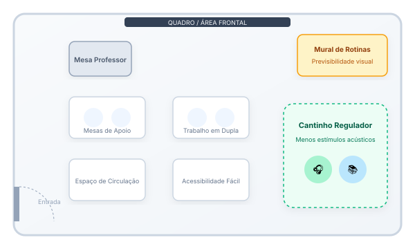

Isolamento repentino
Afastamento persistente dos colegas, recusa em participar de atividades conjuntas e preferência por ficar sozinho durante intervalos e recreio.
ORIENTAR • ACOLHER • INCLUIR
O professor não precisa ter todas as respostas. Observar, escutar, adaptar e saber quando procurar apoio já são passos importantes para construir um ambiente escolar mais acolhedor.
O convívio diário permite que professores percebam comportamentos, mudanças e dificuldades que podem passar despercebidos em outros contextos.
O papel do professor não é realizar diagnóstico médico ou psicológico.
Seu papel pode incluir observar, ouvir, registrar situações relevantes, adaptar práticas pedagógicas possíveis e comunicar preocupações à equipe escolar e aos responsáveis quando necessário.
Visualize a sala como ponto central. Ao redor, pontos interativos que ajudam a planejar.

Evite: "Você não está prestando atenção."
Prefira: "Você entendeu o que precisa fazer ou quer que eu explique de outra forma?"
Evite: "Pare com isso agora."
Prefira: "Percebi que você está desconfortável. Tem alguma coisa incomodando?"
Evite: "Todo mundo conseguiu menos você."
Prefira: "Qual parte está mais difícil? Podemos começar por ela."
Os exemplos não são roteiros obrigatórios. O objetivo é demonstrar uma comunicação que busca compreender antes de julgar.
Escolha uma situação para encontrar orientações iniciais.
Alguns estudantes podem ficar sobrecarregados diante de muitos estímulos, demandas ou situações difíceis ao mesmo tempo.
O comportamento visível pode ser apenas a parte final de vários fatores acumulados.
O objetivo não é punir a reação. É compreender a necessidade.
Uma mudança de comportamento não significa automaticamente a presença de um transtorno mental. Entretanto, mudanças persistentes podem indicar que o estudante está enfrentando alguma dificuldade.
Afastamento persistente dos colegas, recusa em participar de atividades conjuntas e preferência por ficar sozinho durante intervalos e recreio.
Alterações bruscas no humor, irritabilidade incomum, apatia súbita ou reações desproporcionais a situações corriqueiras da sala de aula.
Episódios de choro frequente, ansiedade intensa diante de avaliações, queixas somáticas constantes (dor de barriga, dor de cabeça) ou falas de desesperança.
Dificuldade atípica e contínua para acompanhar o ritmo das aulas, sonolência excessiva ou desorganização repentina com materiais e prazos.
Observe mudanças em relação ao comportamento habitual daquele estudante, e não apenas comportamentos isolados.
Professor: Percebi que você está mais quieto nos últimos dias. Está tudo bem?
Estudante: Não sei.
Professor: Tudo bem não saber explicar agora. Se quiser conversar, estou disponível e podemos procurar alguém que possa ajudar.
Durante a conversa:
Evite: "Isso não é nada."
Prefira: "Quer me contar o que aconteceu?"
Evite: "Na sua idade eu tive problemas maiores."
Prefira: "Como isso está afetando você?"
Evite: "Você precisa ser forte."
Prefira: "O que você precisa neste momento?"
Evite: "É só parar de pensar nisso."
Prefira: "Vamos pensar em quem pode ajudar."
Evite: "Você está exagerando."
Prefira: "Obrigado por conversar comigo."
Não existe frase perfeita. Escuta e respeito são mais importantes que encontrar imediatamente uma solução.
DATA: 14/09
SITUAÇÃO: Troca inesperada de sala
O QUE ACONTECEU: Estudante ficou muito agitado e saiu da atividade.
CONTEXTO: Sala nova, muito barulho.
O QUE AJUDOU: Conversa individual e alguns minutos em ambiente mais tranquilo.
Registre fatos observáveis. Evite rótulos.
Evite: "Aluno fez birra."
Prefira: "Após a mudança de sala, o estudante chorou, cobriu os ouvidos e solicitou sair."
Compartilhar observações ajuda a compreender melhor as necessidades do estudante e construir estratégias consistentes.
Evite: "Seu filho está dando muito trabalho."
Prefira: "Percebemos que nas últimas semanas ele tem demonstrado bastante desconforto durante atividades muito barulhentas. Gostaríamos de entender se vocês também perceberam algo semelhante e pensar juntos em estratégias."
Apelidos ofensivos, humilhação, exclusão intencional e outras formas de violência não devem ser tratadas como simples brincadeiras quando causam sofrimento ou violam direitos.
Utilize esta lista interativa para verificar pontos práticos antes da sua aula:
Uma situação difícil também pode ajudar a construir estratégias melhores para o futuro.
Professores também podem enfrentar sobrecarga e situações emocionalmente difíceis. Buscar apoio da equipe escolar e compartilhar responsabilidades faz parte de uma rede de cuidado saudável.
Você não precisa resolver sozinho situações que exigem atuação de outros profissionais.
Situações persistentes, graves ou que indiquem sofrimento importante devem ser compartilhadas conforme os protocolos da instituição e a rede de proteção social:
Órgão municipal autônomo encarregado de zelar pelos direitos da criança e do adolescente. Acionado em casos de negligência, abandono, violência doméstica ou evasão reiterada.
Canal federal gratuito e anônimo para orientação e denúncia de violações contra crianças, adolescentes e pessoas com deficiência ou autismo.
Centros de Atenção Psicossocial Infantojuvenil e Unidades Básicas de Saúde. Serviços públicos e abertos para cuidado em saúde mental em parceria com a família.
Atendimento Educacional Especializado dentro da própria rede de ensino para adequações pedagógicas, pranchas de comunicação e recursos de acessibilidade.
Diretrizes e materiais técnicos fundamentados em instituições públicas oficiais:
Diretrizes nacionais para a Educação Especial na Perspectiva Inclusiva.
Linhas de cuidado em saúde mental e atendimento à pessoa autista no SUS.
Orientações práticas de inclusão, equidade e proteção de crianças e adolescentes.
Guias de saúde mental escolar e desenvolvimento infantojuvenil.